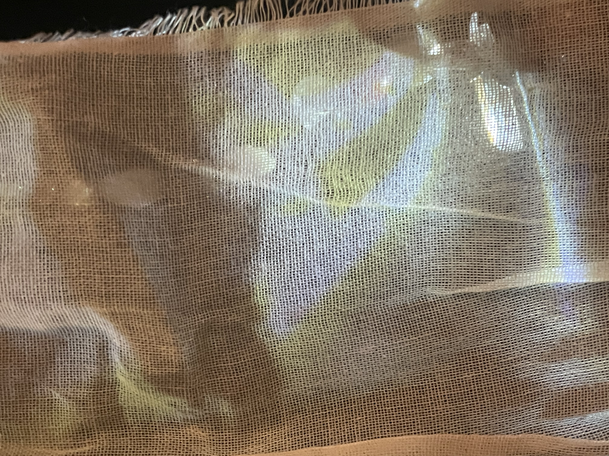
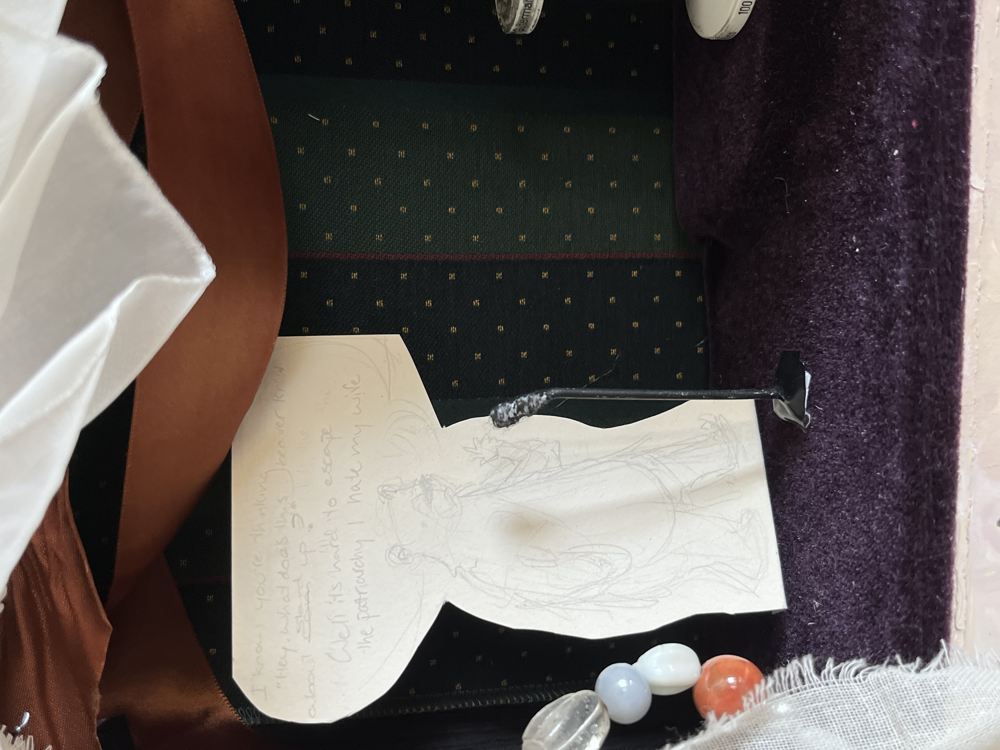
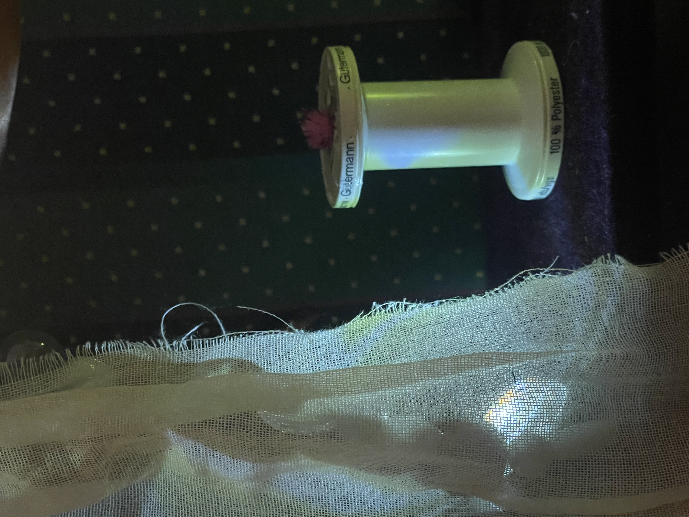
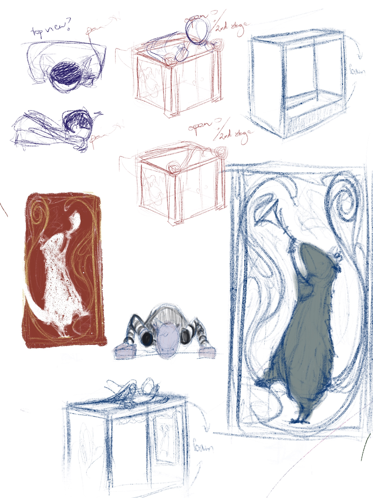
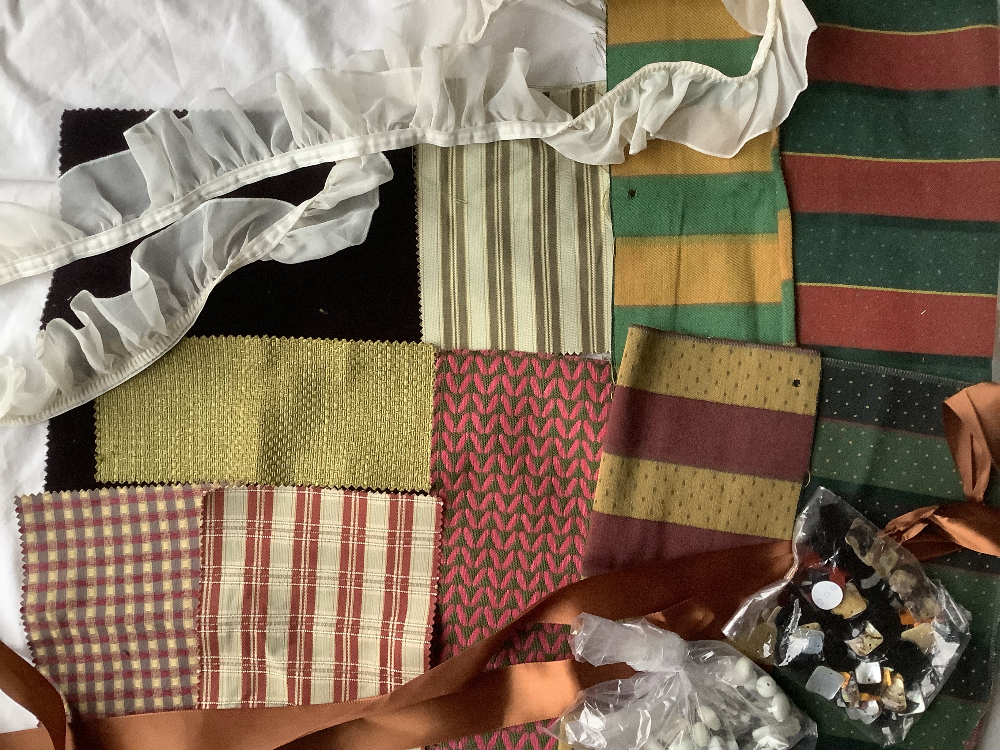
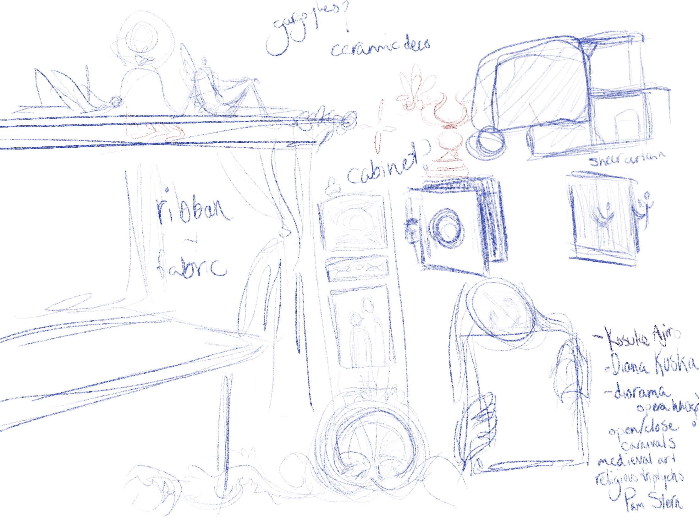
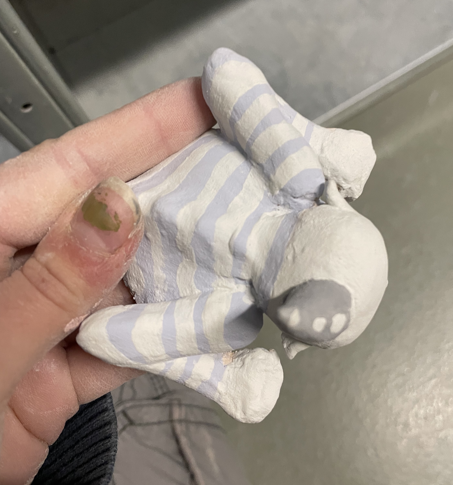
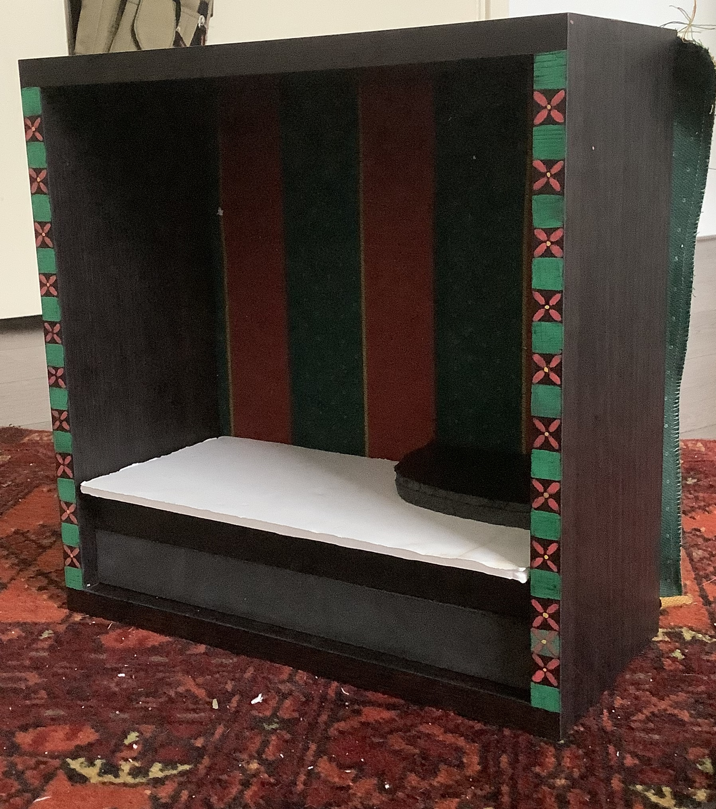
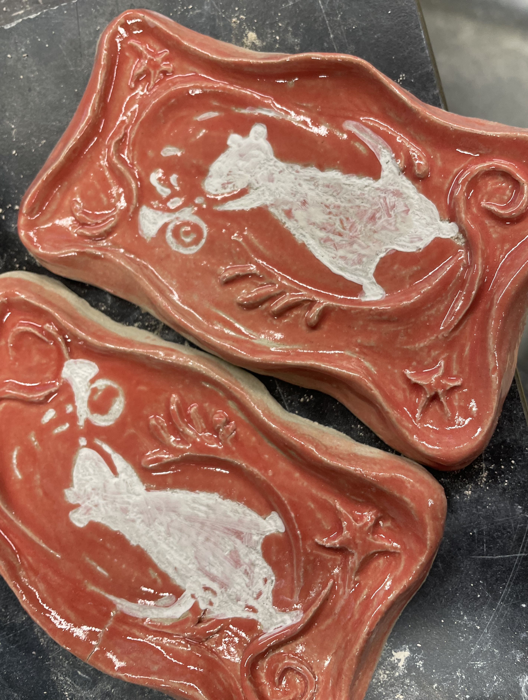

the stage is open, come and watch!
Creature Feature is where forest dwellers and animals deep in the burrow gather for a show, and try to please the Humans in the process.
I created this portable box theatre using scrapped materials and ceramics.
besides serving as a stand-alone piece, ordained with reliefs and ribbons, it will serve as a stage and backdrop for future performances by the featured creatures.





